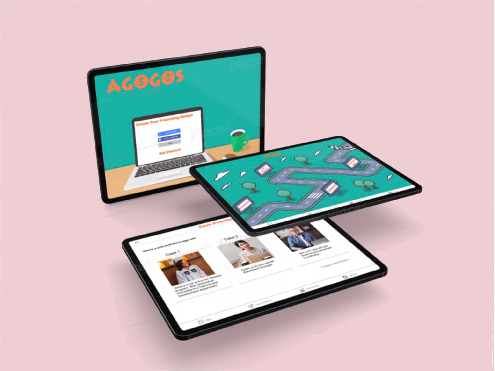
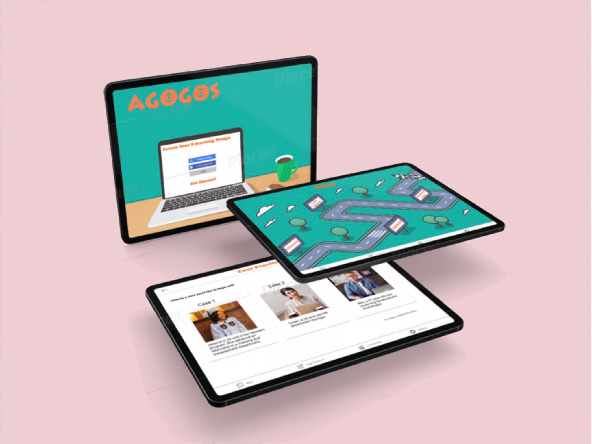
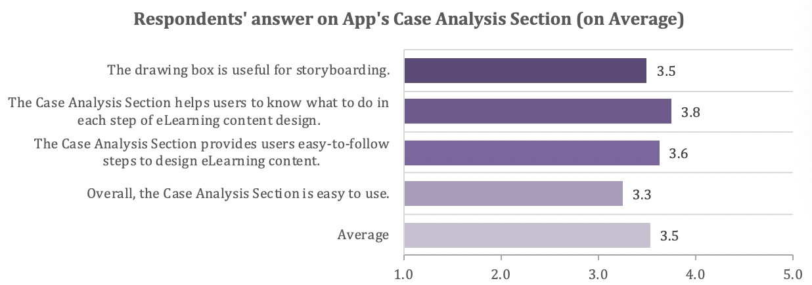
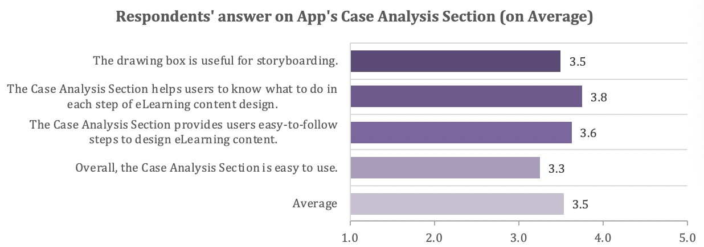

An iPad App
that would guide 30,000+ new instructional designers to develop online courses
that would guide 30,000+ new instructional designers to develop online courses
With three project partners from Teachers College, Columbia University
Due to the rapid growth of the eLearning industry and the various ways that people enter the field of e-Learning, there are inconsistencies in their knowledge of the process of creating e-Learning courses in general. Many people with different backgrounds find their way into the space of e-Learning but not familiar with the procedures of creating an e-Learning course.
New Instructional Design professionals who create eLearning courses, including:
Provide support to eLearning creators
At the end of this app, learners will be able to:
We developed two versions of prototype. The figma version focus more on the overflow and the articulate version inculdes more detailed instruction and case practice.
This video shows how Ben (one of the personas) uses this app to solve his problem through this app.
For the written evaluation, we surveyed 16 people from various background as can be seen in the table above. Overall, our evaluation result is acceptable considering the time and the limitation of the prototype. People enjoyed the concept of our app and our biggest feedback was the visual design of the app. Feedback included comments such as having things pop out more for easier navigation, provide clearer objectives of the app at the beginning of the app. Some of the feedback referenced things we were already aware of in this beta version such as the development tool and setting bar not working. Some feedback we received were due to constraints of the prototype such as the drawing section being unavailable.
Respondents’ Profession
Organization Development Specialist
Report Graphs
 

For future iterations, we would improve our app by including the feedback that we received from our survey. Firstly, we would make the visual design of our app more cohesive. Although our first impression is a roadmap with trees, the rest of our app consists of puzzle pieces. We would pick something that is a cohesive design that better ties into the idea of “instructional design”. Secondly, we would work to expand the community and collaborative aspect of the app. To do this, we could go in two different routes. The first route is to improve on our current version of the community page and make it easily accessible within the app. The second route is to make the community page its own app. By taking the community page and making it its own app, we can then have one app that focuses on the learning aspect of instructional design and the second app focuses on the social aspect where users can share their work.